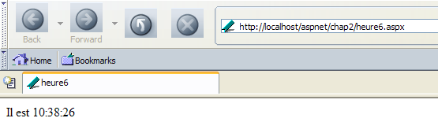

3. Introduzione allo sviluppo web ASP.NET
3.1. Introduction
Il capitolo precedente ha illustrato i principi dello sviluppo web, che sono indipendenti dal linguaggio di programmazione utilizzato. Attualmente, tre tecnologie dominano il mercato dello sviluppo web:
- J2EE, che è una piattaforma di sviluppo Java. Associata alla tecnologia Struts, installata su diversi server applicativi, la piattaforma J2EE viene utilizzata principalmente nei grandi progetti. Grazie al linguaggio utilizzato – Java – un’applicazione J2EE può funzionare sui principali sistemi operativi (Windows, Unix, Linux, Mac OS, ...)
- PHP, che è un linguaggio interpretato anch’esso indipendente dal sistema operativo. A differenza di Java, non si tratta di un linguaggio orientato agli oggetti. Tuttavia, la versione PHP5 dovrebbe introdurre gli oggetti nel linguaggio. Di facile utilizzo, PHP è ampiamente utilizzato nei progetti di piccole e medie dimensioni.
- ASP.NET è una tecnologia che funziona solo su macchine Windows dotate della piattaforma .NET (XP, 2000, 2003, ...). Il linguaggio di sviluppo utilizzato può essere qualsiasi linguaggio compatibile con .NET, c.a.d. Se ne contano più di una decina, a partire dai linguaggi Microsoft (C#, VB.NET, J#), Delphi di Borland, Perl, Python, ...
Il capitolo precedente ha presentato alcuni brevi esempi per ciascuna di queste tre tecnologie. Il presente documento si concentra sullo sviluppo web ASP.NET con il linguaggio VB.NET. Partiamo dal presupposto che questo linguaggio sia già noto. Questo punto è importante. In questa sede ci interessiamo esclusivamente al suo utilizzo nel contesto dello sviluppo web. Approfondiamo ulteriormente questo aspetto parlando della metodologia di sviluppo web MVC.
Un’applicazione web conforme al modello MVC sarà strutturata nel modo seguente:

Tale architettura, denominata a tre livelli o a tre strati, mira a rispettare il modello MVC (Model View Controller):
- l’interfaccia utente è la V (la vista)
- la logica applicativa è il C (il controller)
- le fonti di dati sono l’M (Modello)
L’interfaccia utente è spesso un browser web, ma potrebbe anche essere un’applicazione autonoma che, tramite la rete, invierebbe richieste HTTP al servizio web e formatterebbe i risultati che quest’ultimo le invia. La logica applicativa è costituita dagli script che elaborano le richieste dell’utente. La fonte dei dati è spesso un database, ma può trattarsi anche di semplici file di testo, una directory LDAP, un servizio web remoto, ecc. È nell’interesse dello sviluppatore mantenere un’ampia indipendenza tra queste tre entità, in modo che, se una di esse cambia, le altre due non debbano cambiare o debbano farlo solo in misura minima.
- La logica di business dell’applicazione verrà inserita in classi separate dalla classe che gestisce il dialogo richiesta-risposta. Pertanto, il blocco [Logique applicative] sopra riportato potrà essere costituito dai seguenti elementi:

Nel blocco [Logique Applicative], si potranno distinguere
- la classe di controllo, che costituisce il punto di accesso all’applicazione,
- il blocco [Classes métier], che raggruppa le classi necessarie alla logica dell’applicazione. Queste sono indipendenti dal client.
- il blocco [Classes d'accès aux données], che raggruppa le classi necessarie per ottenere i dati richiesti dal servlet, spesso dati persistenti (BD, file, servizio WEB, ...)
- il blocco delle pagine ASP che costituisce le viste dell'applicazione.
Nei casi più semplici, la logica applicativa si riduce spesso a due classi:
- la classe controller che gestisce il dialogo client-server: elaborazione della richiesta, generazione delle varie risposte
- la classe di business che riceve dal controller i dati da elaborare e gli fornisce in cambio i risultati. Questa classe di business gestisce quindi autonomamente l’accesso ai dati persistenti.
La specificità dello sviluppo web risiede nella scrittura della classe controller e delle pagine di presentazione. Le classi di business e di accesso ai dati sono classi .NET classiche, utilizzabili sia in un'applicazione web che in un'applicazione Windows o persino di tipo console. La scrittura di queste classi richiede una buona conoscenza della programmazione orientata agli oggetti. In questo documento, tali classi saranno scritte in VB.NET; si presume quindi che si abbia padronanza di questo linguaggio. In quest’ottica, non è necessario soffermarsi più del necessario sul codice di accesso ai dati. Nella quasi totalità dei libri su ASP.NET, un capitolo è dedicato a ADO.NET. Lo schema sopra riportato mostra che l’accesso ai dati avviene tramite classi .NET del tutto classiche, che non sono a conoscenza di essere utilizzate in un contesto web. Il controller, che è il caposquadra dell’applicazione web, non deve preoccuparsi di ADO.NET. Deve semplicemente sapere a quale classe deve richiedere i dati di cui ha bisogno e come richiederli. Tutto qui. Inserire codice ADO.NET nel controller non è conforme al concetto MVC spiegato sopra e non lo faremo.
3.2. Gli strumenti
Questo documento è destinato agli studenti, quindi lavoreremo con strumenti gratuiti scaricabili da Internet:
- la piattaforma .NET (compilatori, documentazione)
- l’ambiente di sviluppo WebMatrix che include il server web Cassini
- vari SGBD (MSDE, MySQL)
Si invita il lettore a consultare l'appendice "Strumenti web", che indica dove trovare e come installare questi diversi strumenti. Nella maggior parte dei casi, avremo bisogno solo di tre strumenti:
- un editor di testo per scrivere le applicazioni web.
- uno strumento di sviluppo VB.NET per scrivere il codice VB quando è necessario. Questo tipo di strumento offre in genere un supporto alla digitazione del codice (completamento automatico del codice) e la segnalazione di errori sintattici sia durante la digitazione del codice, sia durante la compilazione.
- un server web per testare le applicazioni web scritte. In questo documento si utilizzerà Cassini. Il lettore che disponga del server IIS potrà sostituire Cassini con IIS. Entrambi sono compatibili con .NET. Cassini è tuttavia limitato a rispondere solo alle richieste locali (localhost), mentre IIS può rispondere alle richieste provenienti da macchine esterne.
Un ottimo ambiente commerciale per lo sviluppo in VB.NET è Visual Studio.NET di Microsoft. Questo IDE, molto completo, consente di gestire ogni tipo di documento (codice VB.NET, documenti HTML, XML, fogli di stile, ...). Per la scrittura del codice, offre il prezioso aiuto del «completamento» automatico del codice. Detto questo, questo strumento, che migliora sensibilmente la produttività dello sviluppatore, presenta un rovescio della medaglia: imprigiona lo sviluppatore in una modalità di sviluppo standard, certamente efficace ma non sempre appropriata.
È possibile utilizzare il server Cassini al di fuori di [WebMatrix] ed è proprio ciò che faremo spesso. L’eseguibile del server si trova in <WebMatrix>\<versione>\WebServer.exe dove <WebMatrix> è la directory di installazione di [WebMatrix] e <versione> il suo numero di versione:

Apriamo una finestra DOS e accediamo alla cartella del server Cassini:
E:\Program Files\Microsoft ASP.NET Web Matrix\v0.6.812>dir
...
29/05/2003 11:00 53 248 WebServer.exe
...
Eseguiamo [WebServer.exe] senza parametri:

Il pannello sopra riportato ci indica che l'applicazione [WebServer/Cassini] accetta tre parametri:
- /port: numero di porta del servizio web. Può essere qualsiasi valore. Il valore predefinito è 80
- /path: percorso fisico di una cartella sul disco
- /vpath: cartella virtuale associata alla cartella fisica precedente.
Inseriremo i nostri esempi in una struttura di file con radice P, contenente le cartelle chap1, chap2, ... corrispondenti ai diversi capitoli di questo documento. Assoceremo a questa cartella fisica P il percorso virtuale V. Avvieremo quindi Cassini con il seguente comando DOS:
Ad esempio, se si desidera che la radice fisica del server sia la cartella [D:\data\devel\aspnet\poly] e la sua radice virtuale [aspnet], il comando DOS per l'avvio del server web sarà:
È possibile inserire questo comando in un collegamento. Una volta avviato, Cassini installa un'icona nella barra delle applicazioni. Facendo doppio clic su di essa, si accede a un pannello di accensione/spegnimento del server:

Il pannello riporta i tre parametri con cui è stato avviato. Offre due pulsanti di avvio/arresto e un link di prova alla radice della sua struttura web. Lo seguiamo. Si apre un browser e viene richiesta la pagina URL [http://localhost/aspnet]. Otteniamo il contenuto della cartella indicata nel campo [Physical Path] sopra riportato:

Nell’esempio, la richiesta URL corrisponde a una cartella e non a un documento web, pertanto il server ha visualizzato il contenuto di tale cartella e non un documento web specifico. Se in questa cartella è presente un file denominato [default.aspx], verrà visualizzato. Creiamo, ad esempio, il seguente file e inseriamolo nella radice dell’albero web di Cassini (d:\data\devel\aspnet\poly in questo caso):
Ora proviamo a richiamare URL [http://localhost/aspnet] con un browser:

Si nota che in realtà sono stati visualizzati URL e [http://localhost/aspnet/default.aspx]. Nel prosieguo del documento, indicheremo come deve essere configurato Cassini utilizzando la notazione Cassini(path,vpath), dove [path] è il nome della cartella radice dell’albero web del server e [vpath] il percorso virtuale associato. Si ricordi che con il server Cassini(path,vpath), l’URL [http://localhost/vpath/XX] corrisponde al percorso fisico [path\XX]. Collocheremo tutti i nostri documenti in una radice fisica che chiameremo <webroot>. In questo modo potremo riferirci al file <webroot>\chap2\here1.aspx. Per ogni lettore questa radice <webroot> sarà una cartella sul proprio computer personale. Qui le schermate mostreranno che questa cartella è spesso [d:\data\devel\aspnet\poly]. Tuttavia, non sarà sempre così, poiché i test sono stati effettuati su computer diversi.
3.3. Primi esempi
Presenteremo alcuni semplici esempi di pagine web dinamiche create con VB.NET. Il lettore è invitato a testarli per verificare che il proprio ambiente di sviluppo sia installato correttamente. Scopriremo che esistono diversi modi per costruire una pagina ASP.NET. Ne sceglieremo uno per il proseguimento dei nostri sviluppi.
3.3.1. Esempio di base - variante 1
Strumenti necessari: un editor di testo, il server Web Cassini
Riprendiamo l’esempio del capitolo precedente. Creiamo il seguente file [heure1.aspx]:
<html>
<head>
<title>Demo asp.net </title>
</head>
<body>
Il est <% =Date.Now.ToString("T") %>
</body>
</html>
Questo codice è il codice HTML con un tag speciale <% ... %>. All'interno di questo tag è possibile inserire il codice VB.NET. In questo caso il codice
genera una stringa di caratteri C che rappresenta l'ora corrente. Il tag <% ... %> viene quindi sostituito da questa stringa di caratteri C. Pertanto, se C è la stringa 18:11:01, la riga HTML contenente il codice VB.NET diventa:
Inseriamo il codice precedente nel file [<webroot>\chap2\heure1.aspx]. Avviamo Cassini (<webroot>,/aspnet) e richiediamo con un browser il file URL [http://localhost/aspnet/chap2/heure1.aspx]:

Una volta ottenuto questo risultato, sappiamo che l’ambiente di sviluppo è installato correttamente. La pagina [heure1.aspx] è stata compilata poiché contiene codice VB.NET. La sua compilazione ha prodotto un file DLL che è stato salvato in una cartella di sistema e successivamente eseguito dal server Cassini.
3.3.2. Esempio di base - variante 2
Strumenti necessari: un editor di testo, il server Web Cassini
Il documento [heure1.aspx] mescola codice HTML e codice VB.NET. In un esempio così semplice, ciò non pone alcun problema. Se si dovesse includere altro codice VB.NET, sarebbe opportuno separare ulteriormente il codice HTML dal codice VB. Ciò può essere fatto raggruppando il codice VB all’interno di un tag <script>:
<script runat="server">
' calcolo dei dati da visualizzare tramite il codice HTML
...
</script>
<html>
....
' visualizzazione dei valori calcolati dalla parte script
</html>
L'esempio [heure2.aspx] illustra questo metodo:
<script runat="server">
Dim maintenant as String=Date.Now.ToString("T")
</script>
<html>
<head>
<title>Demo asp.net </title>
</head>
<body>
Il est
<% =maintenant %>
</body>
</html>
Inseriamo il documento [heure2.aspx] nella struttura [<webroot>\chap2\heure2.aspx] del server web Cassini (<webroot>,/aspnet) e richiediamo il documento con un browser:

3.3.3. Esempio di base - variante 3
Strumenti necessari: un editor di testo, il server web Cassini
Portiamo avanti il processo di separazione del codice VB e del codice HTML inserendoli in due file distinti. Il codice HTML sarà contenuto nel documento [heure3.aspx] e il codice VB nel documento [heure3.aspx.vb]. Il contenuto di [heure3.aspx] sarà il seguente:
<%@ Page Language="vb" src="heure3.aspx.vb" Inherits="heure3" %>
<html>
<head>
<title>Demo asp.net</title>
</head>
<body>
Il est
<% =maintenant %>
</body>
</html>
Ci sono due differenze fondamentali:
- la direttiva [Page] con attributi ancora sconosciuti
- l'uso della variabile [maintenant] nel codice HTML, sebbene non sia inizializzata da nessuna parte
La direttiva [Page] serve in questo caso a indicare che il codice VB, che inizializzerà la pagina, si trova in un altro file. È l’attributo [src] a indicarne la posizione. Scopriremo che il codice VB appartiene a una classe denominata [heure3]. In modo trasparente per lo sviluppatore, un file .aspx viene trasformato in una classe derivata da una classe base denominata [Page]. In questo caso, il nostro documento HTML deve derivare dalla classe che definisce e calcola i dati che deve visualizzare. In questo caso si tratta della classe [heure3] definita nel file [heure3.aspx.vb]. È inoltre necessario specificare questo collegamento padre-figlio tra il documento VB [heure3.aspx.vb] e il documento HTML [heure3.aspx]. È l’attributo [inherits] a specificare tale collegamento. Esso deve indicare il nome della classe definita nel file a cui rimanda l’attributo [src].
Esaminiamo ora il codice VB della pagina:
Public Class heure3
Inherits System.Web.UI.Page
' dati della pagina web da visualizzare
Protected maintenant As String
Private Sub Page_Load(ByVal sender As System.Object, ByVal e As System.EventArgs) Handles MyBase.Load
'si calcolano i dati della pagina web
maintenant = Date.Now.ToString("T")
End Sub
End Class
Si notino i seguenti punti:
- il codice VB definisce una classe [heure3] derivata dalla classe [System.Web.UI.Page]. È sempre così, poiché una pagina web deve sempre derivare da [System.Web.UI.Page].
- la classe dichiara un attributo protetto (protected) [maintenant]. È noto che un attributo protetto è accessibile direttamente nelle classi derivate. È questo che consente al documento HTML [heure3.aspx] di accedere al valore del dato [maintenant] nel proprio codice.
- L’inizializzazione dell’attributo [maintenant] avviene in una procedura [Page_Load]. Vedremo in seguito che un oggetto di tipo [Page] viene informato dal server Web di una serie di eventi. L'evento [Load] si verifica quando l'oggetto [Page] e i suoi componenti sono stati creati. Il gestore di questo evento è indicato dalla direttiva [Handles MyBase.Load]
- il nome [XX] del gestore dell'evento può essere qualsiasi. La sua firma deve essere quella indicata sopra. Per il momento non la spiegheremo.
- Spesso si utilizza il gestore dell’evento [Page.Load] per calcolare i valori dei dati dinamici che la pagina web deve visualizzare.
I documenti [heure3.spx] e [heure3.aspx.vb] sono inseriti in [<webroot>\chap2]. Quindi, tramite un browser, si richiede al server web (<webroot>,/aspnet) i documenti URL e [http://localhost/aspnet/chap2/heure3.aspx]:

3.3.4. Esempio di base - variante 4
Strumenti necessari: un editor di testo, il server web Cassini
Manteniamo lo stesso esempio di prima, ma raggruppiamo nuovamente tutto il codice in un unico file [heure4.aspx]:
<script runat="server">
' dati della pagina web da visualizzare
Private maintenant As String
' evt page_load
Private Sub Page_Load(ByVal sender As System.Object, ByVal e As System.EventArgs) Handles MyBase.Load
'si calcolano i dati della pagina web
maintenant = Date.Now.ToString("T")
End Sub
</script>
<html>
<head>
<title>Demo asp.net</title>
</head>
<body>
Il est
<% =maintenant %>
</body>
</html>
Ritroviamo la sequenza dell'esempio 2:
In questo caso, il codice VB è stato strutturato in procedure. Ritroviamo la procedura [Page_Load] dell'esempio precedente. Vogliamo dimostrare qui che una singola pagina .aspx (non collegata a un codice VB in un file separato) viene trasformata implicitamente in una classe derivata da [Page]. È quindi possibile utilizzare gli attributi, i metodi e gli eventi di questa classe. È proprio ciò che viene fatto qui, dove si utilizza l’evento [Load] di questa classe.
Il metodo di test è identico a quelli precedenti:

3.3.5. Esempio di base - variante 5
Strumenti necessari: un editor di testo, il server Web Cassini
Come nell'esempio 3, si separano il codice VB e il codice HTML in due file distinti. Il codice VB viene inserito nel file [heure5.aspx.vb]:
Public Class heure5
Inherits System.Web.UI.Page
' dati della pagina web da visualizzare
Protected maintenant As String
Private Sub Page_Load(ByVal sender As System.Object, ByVal e As System.EventArgs) Handles MyBase.Load
'si calcolano i dati della pagina web
maintenant = Date.Now.ToString("T")
End Sub
End Class
Il codice HTML è inserito in [heure5.aspx]:
<%@ Page Inherits="heure5" %>
<html>
<head>
<title>Demo asp.net</title>
</head>
<body>
Il est
<% =maintenant %>
</body>
</html>
In questo caso, la direttiva [Page] non indica più il collegamento tra il codice HTML e il codice VB. Il server web non è più in grado di individuare il codice VB per compilarlo (mancanza dell'attributo src). Spetta a noi effettuare questa compilazione. In una finestra DOS, compiliamo quindi la classe VB [heure5.aspx.vb]:
dos>dir
23/03/2004 18:34 133 heure1.aspx
24/03/2004 09:47 232 heure2.aspx
24/03/2004 10:16 183 heure3.aspx
24/03/2004 10:16 332 heure3.aspx.vb
24/03/2004 14:31 440 heure4.aspx
24/03/2004 14:45 332 heure5.aspx.vb
24/03/2004 14:56 148 heure5.aspx
dos>vbc /r:system.dll /r:system.web.dll /t:library /out:heure5.dll heure5.aspx.vb
Compilateur Microsoft (R) Visual Basic .NET version 7.10.3052.4
In precedenza, il file eseguibile [vbc.exe] del compilatore si trovava nel file PATH del sistema DOS. Se così non fosse stato, sarebbe stato necessario specificare il percorso completo di [vbc.exe], che si trova nella struttura di directory in cui è stato installato SDK.NET. Le classi derivate da [Page] richiedono risorse presenti in DLL e [system.dll, system.web.dll], da cui il riferimento a queste ultime tramite l’opzione /r del compilatore. L'opzione /t:library serve a indicare che si desidera generare un file DLL. L'opzione /out indica il nome del file da generare, in questo caso [heure5.dll]. Questo file contiene la classe [heure5] necessaria al documento web [heure5.aspx]. Tuttavia, il server web cerca i file DLL di cui ha bisogno in posizioni ben precise. Una di queste posizioni è la cartella [bin] situata alla radice della sua struttura ad albero. Questa radice è ciò che abbiamo chiamato <webroot>. Per il server IIS, si tratta generalmente di <unità>:\inetpub\wwwroot dove <unità> è l’unità (C, D, ...) su cui è stato installato IIS. Per il server Cassini, questa radice corrisponde al parametro /path con cui lo avete avviato. Ricordiamo che questo valore può essere ottenuto facendo doppio clic sull’icona del server nella barra delle applicazioni:

<webroot> corrisponde all’attributo [Physical Path] sopra indicato. Creiamo quindi una cartella <webroot>\bin e vi inseriamo [heure5.dll]:

Siamo pronti. Richiediamo URL [http://localhost/aspnet/chap2/heure5.aspx] al server Cassini (<webroot>,/aspnet):

3.3.6. Esempio di base - variante 6
Strumenti necessari: un editor di testo, il server Web Cassini
Finora abbiamo dimostrato che un'applicazione web dinamica è composta da due parti:
- il codice VB per calcolare le parti dinamiche della pagina
- il codice HTML che a volte include il codice VB per la visualizzazione di tali valori nella pagina. Questa parte rappresenta la risposta inviata al client web.
La componente 1 è denominata componente controller della pagina e la parte 2 componente di presentazione. La parte di presentazione deve contenere il minor codice VB possibile, o addirittura nessun codice VB. Vedremo che ciò è possibile. Qui mostriamo un esempio in cui è presente un solo controller e nessun componente di presentazione. È il controller stesso a generare la risposta al client senza l’ausilio del componente di presentazione.
Il codice di presentazione diventa il seguente:
Si nota che al suo interno non è più presente alcun codice HTML. La risposta viene elaborata direttamente nel controller:
Public Class heure6
Inherits System.Web.UI.Page
Private Sub Page_Load(ByVal sender As System.Object, ByVal e As System.EventArgs) Handles MyBase.Load
' si elabora la risposta
Dim HTML As String
HTML = "<html><head><title>heure6</title></head><body>Il est "
HTML += Date.Now.ToString("T")
HTML += "</body></html>"
' la si invia
Response.Write(HTML)
End Sub
End Class
Il controller genera qui l'intera risposta anziché solo le parti dinamiche di essa. Inoltre, la invia. Lo fa tramite la proprietà [Response] di tipo [HttpResponse] della classe [Page]. Si tratta di un oggetto che rappresenta la risposta fornita dal server al client. La classe [HttpResponse] dispone di un metodo [Write] per scrivere nel flusso HTML che verrà inviato al client. Qui inseriamo l’intero flusso HTML da inviare nella variabile [HTML] e inviamo quest’ultima al client tramite [Response.Write(HTML)].
Richiediamo l’URL [http://localhost/aspnet/chap2/heure6.aspx] al server Cassini (<webroot>,/aspnet):

3.3.7. Conclusione
Di seguito utilizzeremo il metodo 3, che inserisce il codice VB e il codice HTML di un documento web dinamico in due file separati. Questo metodo presenta il vantaggio di suddividere una pagina web in due componenti:
- una componente di controllo composta esclusivamente dal codice VB per il calcolo delle parti dinamiche della pagina
- una componente di presentazione, che è la risposta inviata al client. È composta da codice HTML che a volte include codice VB per la visualizzazione dei valori dinamici. Cercheremo sempre di avere il minimo possibile di codice VB nella parte di presentazione; l’ideale sarebbe non averne affatto.
Come illustrato nel metodo 5, il controller potrà essere compilato indipendentemente dall’applicazione web. Ciò offre il vantaggio di concentrarsi esclusivamente sul codice e di ottenere, ad ogni compilazione, l’elenco di tutti gli errori. Una volta compilato il controller, l’applicazione web può essere testata. Senza una compilazione preliminare, sarà il server web a occuparsene, e gli errori verranno segnalati uno per uno. Ciò può essere considerato fastidioso.
Per gli esempi che seguiranno, sono sufficienti i seguenti strumenti:
- un editor di testo per creare i documenti HTML e VB dell’applicazione, quando sono semplici
- uno strumento di sviluppo .NET per creare le classi VB.NET, in modo da beneficiare dell’aiuto fornito da questo tipo di strumento nella scrittura del codice. Un esempio di tale strumento è CSharpDevelop (http://www.icsharpcode.net). Un esempio di utilizzo è riportato nell’allegato [Les outils du développement web].
- lo strumento WebMatrix per creare le pagine di presentazione dell’applicazione (cfr. l’allegato [Les outils du développement web]).
- il server Cassini
Tutti questi strumenti sono gratuiti.